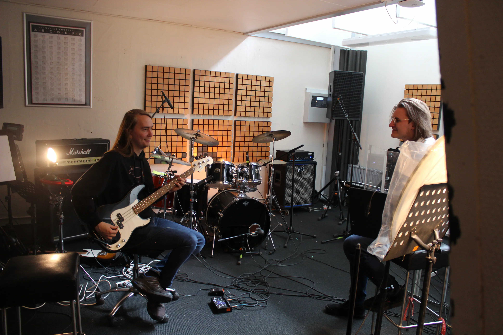
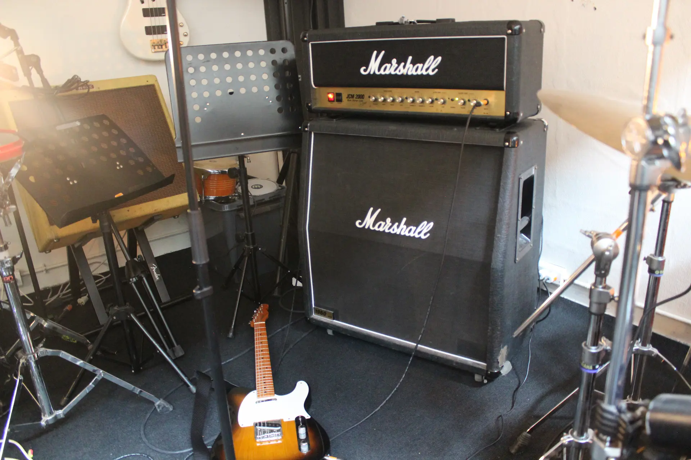
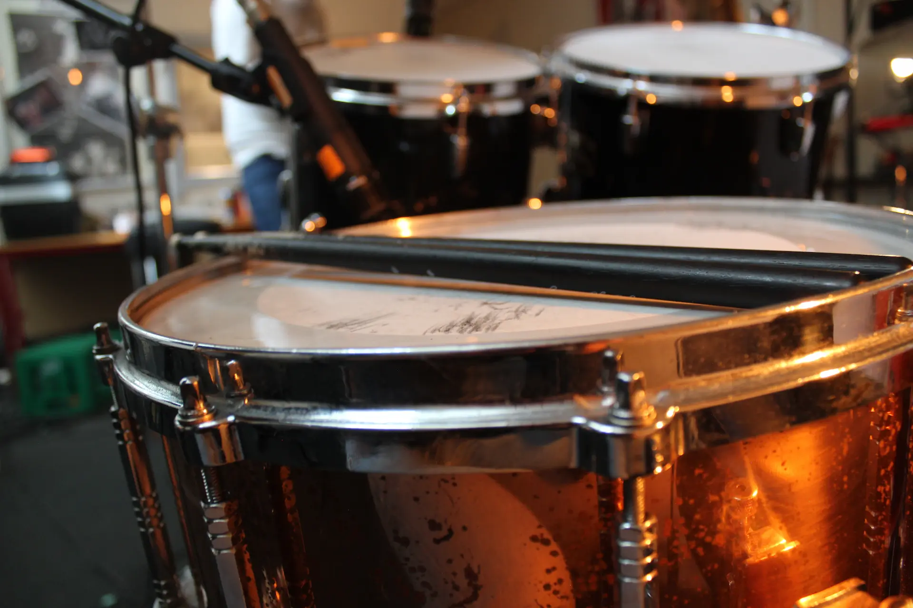
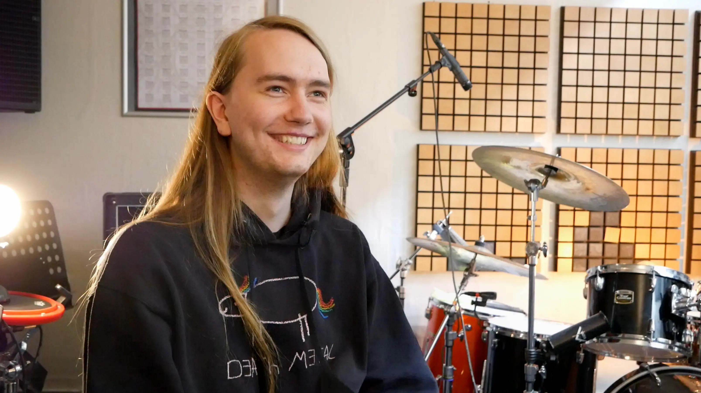

Koncept
Vores koncept er at skabe et virkelighedsnært og indsigtsfuldt billede af genren (progressivt dødsmetal), og gå mere i dybden med hvordan livet er som musikere. Hvad der er med til at drive en ung frisk guitarist til at realisere sin drøm. Vi vil med enkle og lette indstillinger, fortælle om livet som dødsmetal bassist.
Præmis
At komme ind under huden på en person, som brænder for at lave musik og finde ud af hvad der driver dem.
Logline
En dygtig bassist fortæller om det sjove og spændende ved at spille progressivt dødsmetal.
Portræt
Interview
Bjørn Heesche Petersen fra Global Darkness, fortæller om hans passion for progressivt dødsmetal og det at spille bassist i et dødsmetal bandt